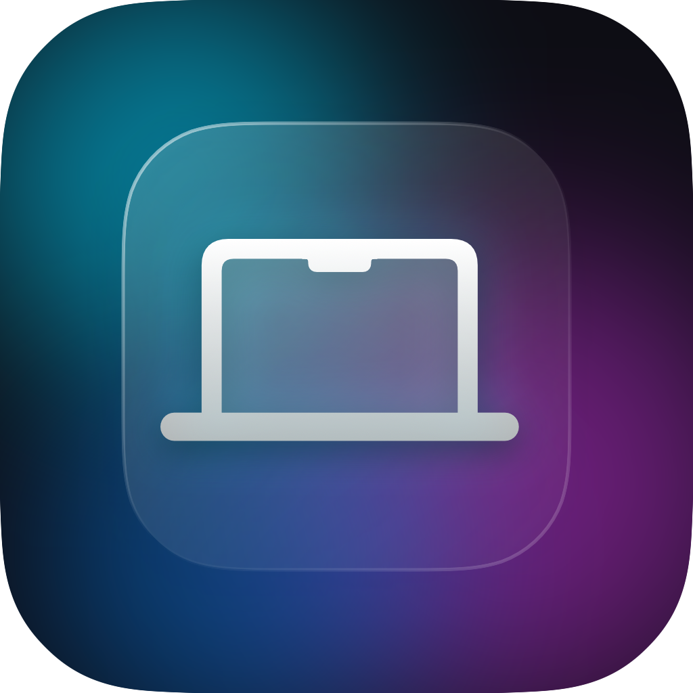

LidMotion
All the magical effects, perfected.
The iconic Duo effect.
The flagship animation that started it all. Watch your desktop seamlessly fold into real space as you close your Mac. No lag, no stutter, just pure magic.
Experience them all.
Select an effect below to see it in action.
Beautiful. Native. Lightweight.
Runs silently in your menu bar. No bloated windows, no dock icons.
Just raw, native performance.
Zero latency
Hardware-level sensor reading at 120Hz for immediate response.
Native design
Built with SwiftUI to look and feel exactly like a system utility.
Runs silently
0% CPU usage in the background. Your battery won't even notice it.
Sight and Sound.
LidMotion doesn't just look incredible. It sounds incredible. Experience the tactile click of mechanical switches or the deep buzz of a CRT turning off, perfectly synced to your lid's physical movement.
- 🔊Mechanical Click
- 📺CRT Power Zap
- 🎨Custom Phosphor Colors
Built for Apple Silicon.
Engineered natively in Swift and Metal, LidMotion utilizes hardware acceleration to deliver 120FPS animations with strictly 0% idle CPU overhead.
What happens on your Mac, stays on your Mac.
LidMotion operates 100% locally. No network requests. No analytics. No data collection. Open source and fully transparent. Always.
Check your Mac's compatibility.
LidMotion requires a precise hardware Lid Angle Sensor (LAS) to track the exact degree of your display. This sensor is included in all modern Apple Silicon MacBooks featuring the new uniform chassis design.
✅ Fully Supported
- • MacBook Pro 14" & 16" (M1, M2, M3, M4, M5)
- • MacBook Air 13" & 15" (M2, M3, M4, M5)
- • MacBook Pro 16-inch (2019, Intel)
❌ Not Supported
- • MacBook Air M1 (2020) & older
- • MacBook Pro 13" (M1, M2) & older
- • Desktop Macs (iMac, Mac mini, Studio)
Frequently Asked Questions
Does it drain my battery?
Can I use it with an external monitor?
Why does it need Screen Recording permissions?
LidMotion 1.2
Requires macOS 14.0 or later.
First Launch Instructions
- Open System Settings → Privacy & Security. Scroll down and click Open Anyway for LidMotion.
- Allow Accessibility and Screen Recording permissions to enable the 3D effect.